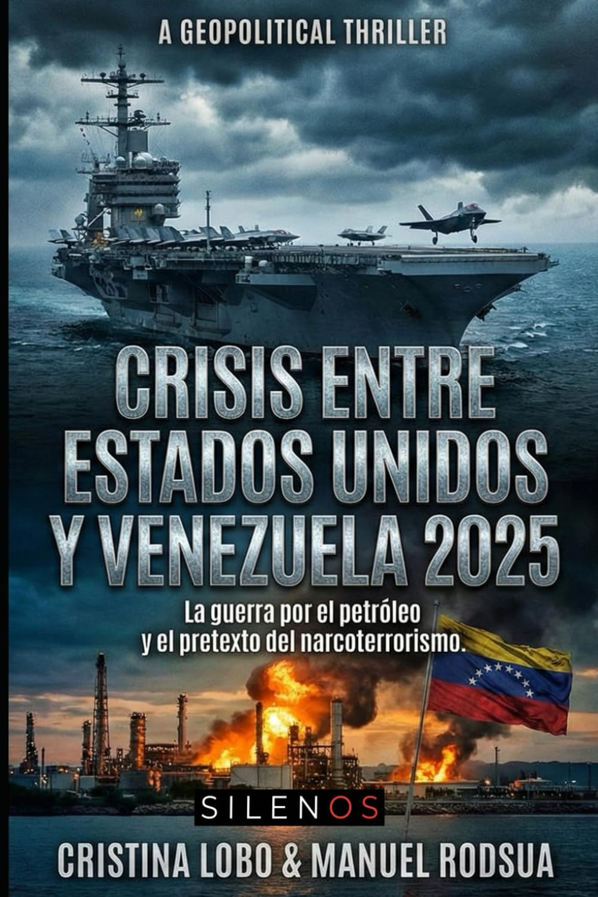

Crónica Presente
Crisis entre Estados Unidos y Venezuela 2025: La guerra por el petróleo y el pretexto del narcoterrorismo (Crónica Presente)
Sinopsis
Año 2025. La diplomacia ha muerto. El rugido de los cazas F-35 sobre el mar Caribe anuncia la nueva doctrina de Washington. Con Donald Trump de regreso en la Casa Blanca, la tensión con Venezuela ha superado el punto de no retorno. Bajo el pretexto de una "guerra contra el narcoterrorismo", Estados Unidos ha desplegado una fuerza naval imparable frente a las costas venezolanas. La designación de los cárteles y del propio Estado como objetivos terroristas ha otorgado al Pentágono una "licencia para matar", borrando las líneas del derecho internacional. Cuando un destructor estadounidense hunde una patrullera venezolana, el presidente Nicolás Maduro declara la "República en Armas". Viejos cazas F-16 desafían a la flota más poderosa del mundo en un juego suicida del gato y el ratón. Pero mientras los misiles vuelan y el bloqueo naval asfixia a una nación, la verdadera motivación emerge de las sombras. Esta no es una guerra por la seguridad. Es una batalla brutal por el control de las mayores reservas de petróleo y oro del planeta. En este tablero de ajedrez explosivo, naciones como México y Colombia luchan por mantener su soberanía mientras el continente se fractura. Las negociaciones secretas fracasan y la "Crónica Presente" se convierte en una pesadilla futura. Lee la primera entrega de la serie CRÓNICA PRESENTE, un thriller geopolítico aterradoramente plausible que expone las verdades incómodas detrás de los titulares de mañana.